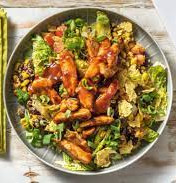

Mexican Salad

Description
This recipe is a short journey to Mexico
Ingredients
- 250g Chicken breaast fillet
- 1 Lettuce heart (Romana)
- 1 Tomato
- 1 Lime
- 1 Scallion
- 1 Pack Black Beans
- 1 Pack Corn
- 51 ml Mayonnaise
- 20 ml BBQ Sauce
- 75g Tortilla Chips
- 4 Tablespoon Oil
- Salt & Pepper to taste
Steps
- Place black beans and corn in a colander and rinse under running water until it runs clear.
Cut chicken breast into strips about 1 cm wide.
Separately, cut white and green part of scallion into thin rings.
- Grate the zest from the lime. Halve lime and cut one half into wedges.
In a small bowl, mix mayonnaise with juice of 1 lime half, 1 teaspoon lime zest, salt and pepper.
- In a large skillet, heat 1 tablespoon oil over medium heat. Add white scallion rings, black beans, and corn and sear for 4 - 5 minutes.
Season beans with salt and pepper. Then remove from pan and set aside briefly. Wipe out pan.
- Meanwhile, in a large bowl, mix 1 tablespoon lime dip with 2 tablespoons oil. Season to taste with salt and pepper.
Halve lettuce hearts lengthwise and cut into strips about 1 cm wide. Halve tomato, remove stalk and cut tomato halves into 1 cm cubes.
Add lettuce strips and diced tomatoes to large bowl and mix with dressing.
- In large pan, heat 1 tablespoon oil again and fry chicken breast strips for approx 5 - 7 minutes turning, until strips are golden brown and cooked through.
Add BBQ sauce and sauté for approx 1 minute until chicken is glazed and no longer pink inside.
- Coarsely crumble tortilla chips in the bag with the help of a rolling pin. Mix the crumbs with the salad.
Divide bean mix among plates, arrange salad on top and top with BBQ chicken strips and green scallion rings.
Enjoy with remaining lime dip and lime wedges.